Here is the map of Dota 2 (as of 12/13/2020). The green colored buildings are radiant while the red colored buildings are the dire.
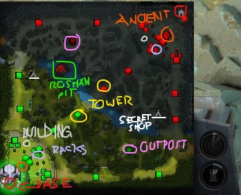
<-- What the symbols mean
Lane names -->
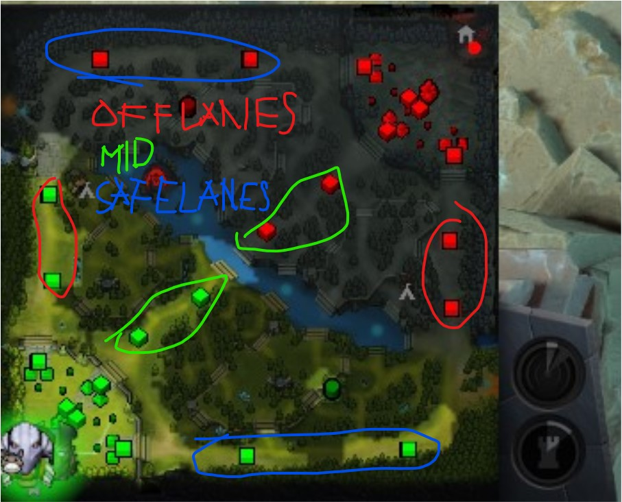
Explanation of Attributes
These stats go up as you level your hero up (rate depends on their primary attribute; if the hero has a primary attribute of agility, it has more base agility stat and its rate when the hero levels up is higher than the other attributes).
(Strength) Increases health and health regeneration.
(Agility) Increases armor and attack speed.
(Intelligence) Increases mana and mana regeneration.
Raising a hero's Primary Attribute also raises their physical attack damage. Attributes can also be increased by items and abilities.
Units and Runes Spawn Time
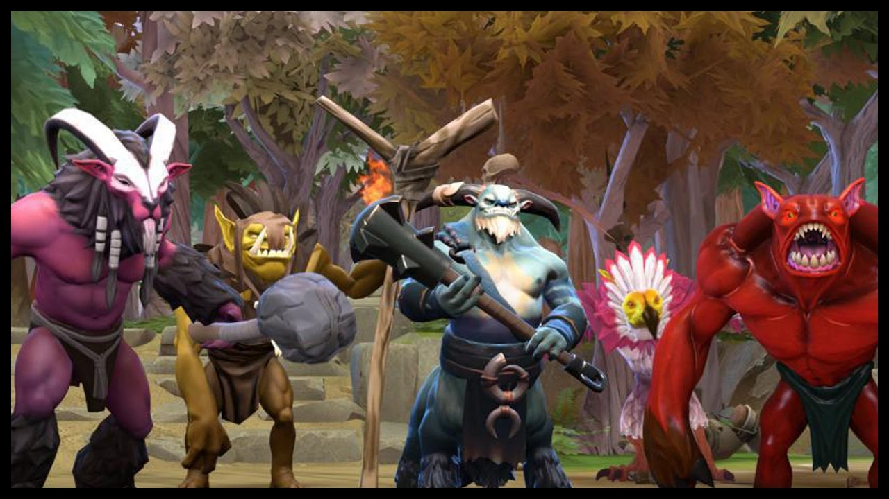
Some of the neutral creeps in Dota 2.
Theese creeps grant you gold and exp when you kill them but not as much as the lane creeps. Neutral creeps spawn spawn at the 1:00 time mark and every minute after that. Players can what we call "stacking", where they attack the creep and make them "aggro" (making the unit come to the player) to them, if timed correctly, allows 2 groups of neutral creeps in one camp. This can be done infinitely and it can be applied to all camps.
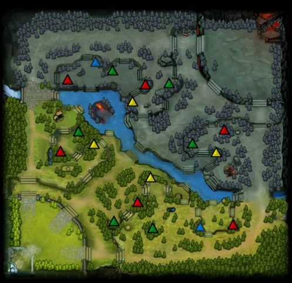
Neutral creeps spawn point in Dota 2.
Small camps are shown in blue, medium camps in green, large camps in red, and ancient camps in yellow.
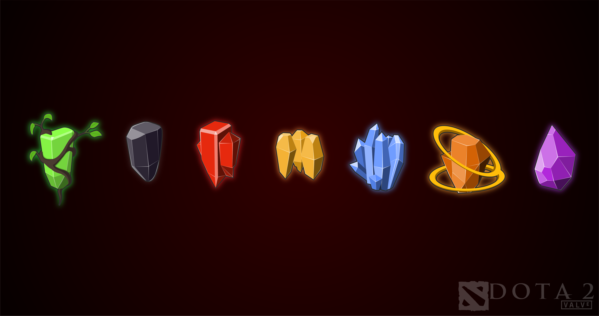
These are the runes, (left to right):
Regeneration (regens health and mana at a fast rate until it maxes out or you get hit by an enemy hero).
Invisibility (makes you invinsible for 45 seconds).
Haste (makes you have 550 movement speed for 22 seconds).
Illusion (grants 2 illusion that deals 35% of your damage, damage taken from enemies Melee = 200% Ranged = 300% and Lasts for 75 seconds).
Double damage (Doubles your damage for 45 seconds).
Bounty (Grants bonus gold, and increases the gold granted by 10 every 5 minutes).
Arcane (Reduces your cooldown by 30% and mana loss reduction by 30% for 50 seconds).
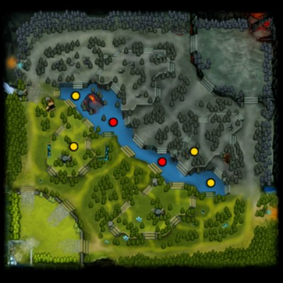
Red circles: Power-up runes (every rune except bounty runes). Spawns at the 4:00 time mark and every 2 minutes after that.
Yellow circles: Bounty runes. Spawns at the 0:00 time mark and every 5 minutes after that.
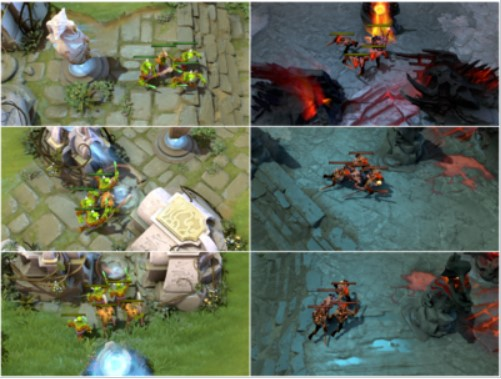
Creeps spawn the first time at the 0:00 time mark, or right after the game horn sounds. They then spawn every 30 seconds after that. Siege creeps start spawning on the eleventh wave, and after that, it is every tenth wave.
Spawn locations of creeps.
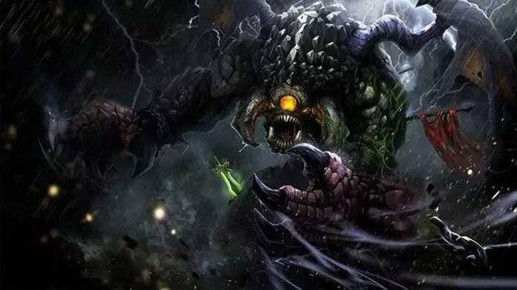
Roshan drops an "Aegis of the Immortal" 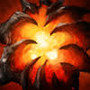, whoever gets a hold of it, will ressurect after they die in 5 seconds (one time use). Roshan immediately spawns on the Roshan Pit when the game starts. When Roshan is slained, he respawns at the pit between a time of 8-11 minutes.
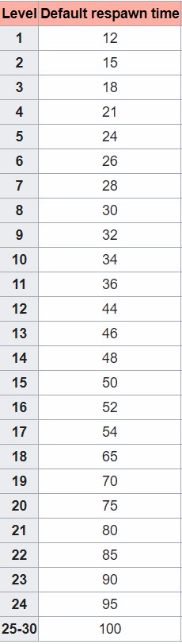
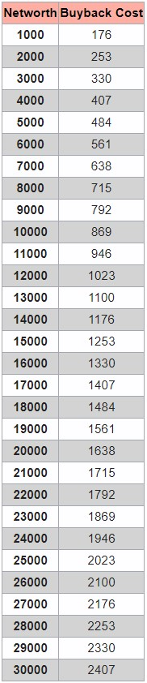
When heroes die, they do not respawn immediately (although there is a thing called buyback which is explained later), rather, they have a respawn time. Respawn time of heroes varies on their level. Shorter respawn time when level is low, and longer respawn time when level is high. Which can be seen in the table at the right.
If it is really necessary, players can buyback. Technically where you respawn immediately at the exchange for your gold. Cost varies by networth which is seen at the table at the right.
You can gain gold and exp by killing, have an assist, and last hitting the unit. For creeps, you can get gold from them when you last hit them (aka called CS *creep score*), but when you fail to last hit, you can still gain exp. When you kill a hero, the person who "last hit" the hero, will have more gold. However, he will not only gain gold as other players who contributed in killing the enemy hero will also gain gold. When a unit dies exp is equally shared to each hero that is present in a 1500 in game units radius.
Here is a video (right) about last hitting as this is crucial in the game as this is the only way for you to get gold (other than bounty runes) for you to dominate your enemies, and me last hitting (left).
These are not all the game mechanics but I think this is the most essential thing that you need to know. As when you know these stated basic mechanics (e.g. last hitting, respawn times, runes, map, and etc.), it can significantly help you as you learn about Dota 2 and this is crucial for the game.

 (Strength) Increases health and health regeneration.
(Strength) Increases health and health regeneration. (Agility) Increases armor and attack speed.
(Agility) Increases armor and attack speed. (Intelligence) Increases mana and mana regeneration.
(Intelligence) Increases mana and mana regeneration.